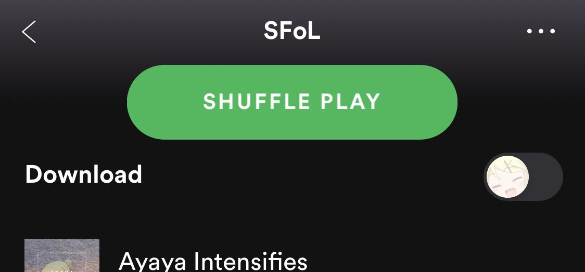

SFoL 60: Randomizer!
Hosted by katze and Chloe
Phase Length
Day Phase: 48 Hours
Night Phase: 24 Hours
Day 1: 24 Hours, but no execution.
Rules
- Follow the Global Forum Rules
- Follow the Official Forum Mafia and Forum of Lies Rules
Gameplay
- Days last 48 hours, or until majority is reached for execution. Nights last 24 hours. The first day will last for 24 hours.
- All actions must be sent to the hosts - through your classcard, or scumchat.
- Unseen will talk through a special Discord server or forum message.
- The priest will speak with the dead through a separate Discord server or forum message.
- This game will be using current FoL balance changes as of 04/21 - Any changes made after this date will not be included in this SFoL.
Executions
- To accuse someone say “**/vote [player]**”
- Should the votes reach the majority, that player will be executed and the day will end.
- When the day ends, the player with the most votes will be executed.
- No Lynch may be done by saying “**/vote no lynch**”. This will stop the end of day plurality lynch from happening should it have more votes than any player.
- You may self-vote.
Picking a New King
- If there are 4 players or less, a new king will not be selected.
- When the king dies a 12 hour period starts. In this, players may vote in their class PM for who they want to become the next king. You cannot submit day actions until after this period.
- Whoever receives the most votes in this period will be crowned king. If votes are tied, a king election will be held the next day to determine it.
Journals
- DM the host what you want on your journal. When you die, the last update to your journal will be revealed to everyone. Journals are limited to 1000 characters.
Classlist
King (65% Good, 35% Evil)
Mastermind
Assassin
Prince
Random Blue Dragon
Random Blue Dragon
Random Blue Dragon
Random Blue Dragon
Random Blue Dragon
Random Blue Dragon
Random Blue Dragon
Random Blue Dragon
Random Blue Dragon
Random Blue Dragon
Random Blue Dragon
Random Blue Dragon / Random Neutral Non-Killer
Random Neutral Non-Killer
Neutral Killer
Randomization
This game features a self-explanatory feature called randomization! Please read the following information carefully:
All classes except the Prince, Mastermind and all Kings (Starting or Elected) will have full randomization of Abilities and Passives, or the option to randomize select abilities if they are the Assassin or any Random Neutral Non-Killer
All Random Blue Dragon slots will be randomly selected from a pool of all Blue Dragon Passives, Day Abilities, and Night Abilities. Every class will have 0-2 Passives, 0-2 Day Abilities, and 1-2 Night Abilities.
The only exception for this full randomization is if a class rolls a Passive or Ability that requires a corresponding Ability in order to function. A list is provided below for Passives and Abilities that must roll together.
Randomization Exceptions
- The Alchemist’s Brew Potion & Apply Potion.
- The Archer’s Multi-shot and Bulls-eye.
- The Court Wizard’s Arcane Empower will always roll alongside a Night Ability that visits.
- The Knight’s Armored & Defend.
- The Maid’s Rumor, if rolled, will always be accompanied by Matchmake. However, Matchmake can roll on its own.
- The Demon’s Haemophilia will never roll with The Sorcerer’s Day Abilities.
- The Sorcerer’s Walking Bomb & Detonate
- The Sorcerer’s Bomb Swap, if rolled, will always be accompanied by Walking Bomb. However, Walking Bomb can roll on its own.
- If ANY of The Reaper’s abilities were rolled, the player will also receive the passive Consume Soul
Only one of the following can spawn: The Mystic’s Link Minds and The Priest’s Channel.
The Religious Fervor passive is unobtainable, as it has no effect.
Class Naming
The name of your class depends on what Main Ability you roll. The posssible scenarios are shown below:
- If you have the Main Ability of only one Blue Dragon class, you will inherit the name of said class.
- If you have the Main Ability of more than one Blue Dragon class, you will inherit the name of the first Night Ability’s class.
- If you do not have a Main Ability, you will inherit the name of your first Night Ability’s class.
Main Abilities
- The Alchemist’s Brew Potion & Apply Potion.
- The Archer’s Eagle Shot
- The Butler’s Serve Wine
- The Chronomancer’s Alter Time
- The Court Wizard’s Magical Barrier
- The Drunk’s Debauchery
- The Hunter’s Bear Companion
- The Knight’s Defend
- The Maid’s Matchmake
- The Mystic’s Link Minds (takes name priority over night abilities)
- The Noble’s Bounty
- The Observer’s Follow
- The Physician’s Heal
- The Priest’s Channel (takes name priority over other night ability)
- The Princess’ Flirt
- The Sheriff’s Expert Investigation
- The Tavernkeeper’s Mix Rooms
Example Classes
One Main Ability
The Hunter
Blue Dragon Killer
Remedy Studies (Passive) - You are immune to bleeding.
Court Spies (Day) - Select 2 players. Send a message saying “Noble’s Spies close in on you!” to any targeted members of the Unseen. Those targeted members will be removed from Unseen chat for the coming night and day. - 2 uses.
Bear Companion (Night) - Summon a bear to protect you, granting you death and conversion immunity for the night. You will kill any attackers (Bypasses night immunity). - 2 uses
Your objective is to defeat the Unseen and any neutrals that seek to do you harm.
Converts into The Poacher.
Two Main Abilities
The Butler
Blue Dragon Offensive
Arcane Empower (Day) - The player that you target with your ability tonight will bypass immunities (discounting conversion immunity) and be guaranteed to succeed with their actions. Their investigative abilities will always receive correct results. - 2 uses.
Serve Wine (Night) - Occupy a player by getting them drunk. - Infinite uses
Eagle Shot (Night) - Fire an arrow to kill your target. This ability is disabled if you kill a member of BD with it. - Infinite uses
Your objective is to defeat the Unseen and any neutrals that seek to do you harm.
Converts into The Servant.
No Main Abilities
The Noble
Blue Dragon Social
Gossip (Night) - Target a player and learn if any and which of these things happens to them tonight. - Infinite UsesThey were successfully Investigated.
They were successfully Occupied.
Their target was successfully swapped.Serve Ale (Night) - Redirect a player to themselves. - 1 Use
Your objective is to defeat the Unseen and any neutrals that seek to do you harm.
Converts into The Aristocrat.
Conversion
Passives are kept upon conversion.
Unseen class names stay the same as normal FoL, however, your abilities may be altered slightly. The general rule is that each of your abilities will be converted to their Unseen form. If you have the first ability of a class, you will receive the first ability, or corresponding ability, of the converted class. Exceptions are listed below:
Converted Ability Exceptions
- Upon conversion, Gossip will become both Pull Rank and Gossip
- Upon conversion, Change Sheets will become Prying Servants
- Upon conversion, Rumor will become Search Room
- Upon conversion, both Inoculate and Exhume will become Disembalm
- Upon conversion, Link Minds will become both Link Minds and Construct Reality
- Upon conversion, Warp Reality will become both Warp Reality and Construct Reality
- Upon conversion, both Follow and Stalk will become Stalk
- Upon conversion, Last Rites will become both Bind Soul and Curse
- Upon conversion, Channel will become both Seance and Curse
- Upon conversion, Alter Time will always grant the Rewind passive.
Example Convert Classes
Using the same example classes from the Class Naming section, we can show precisely how converting abilities works.
The Poacher
Unseen Offensive
Remedy Studies (Passive) - You are immune to bleeding.
Incriminate (Day) - Slip a player forged documents, making them appear evil to investigations tonight. - Infinite uses
Spike Traps (Night) - Place a spike trap outside a player’s room. No one will be able to visit the player, and they will be occupied. - 3 uses
Your objective is to defeat the Blue Dragon and any neutrals that seek to do you harm.
The Servant
Unseen Offensive
Dark Rune (Day) - Choose a player. If that player uses an ability today they will target themselves with it. - 2 uses
Serve Wine (Night) - Occupy a player. - Infinite uses
Raven Shot (Night) - Shoot a bolt to kill your target. This does not count as a visit. If the Assassin attempts to carry out a kill, you will instead shoot their target for them. - Infinite uses
Your objective is to defeat the Blue Dragon and any neutrals that seek to do you harm.
The Aristocrat
Unseen Social
Pull Rank (Night) - In the coming day, your target will require one less vote to be executed. - 2 uses
Gossip (Night) - Target a player and learn if any and which of these things happens to them tonight. - Infinite UsesThey were successfully Investigated.
They were successfully Occupied.
Their target was successfully swapped.Serve Ale (Night) - Redirect a player to themselves. - 2 Uses
Your objective is to defeat the Blue Dragon and any neutrals that seek to do you harm.
Neutral Killer Rolling & Naming
In order to be completely transparent about how Neutral Killers are randomized, we have decided to make this rolling process public. For starters, the name of the Neutral Killer depends entirely on what Main Ability you roll. In this case, every Main Ability will have the power to kill. Secondary Abilities are not guaranteed to provide a kill. A list of Main Abilities and Secondary Abilities can be seen below:
Main Abilities
- The Demon’s Funeral Pyre
- The Possessor’s Puppet Strings
- The Mind Flayer’s Brain Destruction
- The Reaper’s Reap
- The Sorcerer’s Magic Missile
Secondary Abilities
- The Possessor’s Possess
- The Mind Flayer’s Shape Knowledge
- The Reaper’s Gather Darkness
- The Sorcerer’s Detonate
NK Rolling Process
The exact rolling process for Neutral Killers is as follows:
-
Passive 2
Roll a d3 - If it lands on 1 or 2, you do not get a 2nd passive. If it lands on 3 - you receive Mindstorm -
Day Abilities
Roll a d2 - if it lands on 1, you receive a single day ability. If it lands on 2, you receive two day abilities. Keep in mind, The Demon’s Haemophilia will never roll with The Sorcerer’s Day Abilities. -
Main Ability
Roll a d5. Main Abilites are listed above. -
Secondary Ability
Roll a d4. Secondary Abilities are listed above. -
Passive 1
If ANY Reaper abilities were rolled in the previous steps, you receive Consume Soul.
Else: roll a d3
If it lands on 1 or 2, you receive a random Occ/Redirect/Death Immune Passive
If it lands on 3, you receive Mage Armor
Neutral Killer winconditions will be decided using Will of the Mod - this is explained below in Important Changes
Example Neutral Killer
The Possessor


Neutral Killer
Cloak Of Mithras (Passive) - Immune to death at night, occupation and target changing. In addition you are immune to bleeding and will be informed upon being bled.
Mindstorm (Passive) - Once per night you may guess a player’s class. If you are correct you will empower your Main Ability to bypass protections. This passive will be disabled if you guess incorrectly twice. Cannot Target the King, nor can target the same person after a successful guess.
Walking Bomb (Day) - Place a bomb on target player. - Infinite uses
Puppet Strings (Night) - Control a player and force them to kill someone. Can be forced to target themselves.
Detonate (Night) - All players with a bomb active will explode bypassing death immunity. This does not count as a visit. - 2 usesYour objective is to defeat the Blue Dragon and the Unseen.
Altered Abilites and Mechanics
In order for this game to be a bit more balanced, and allow (almost) every player to get the full randomization experience, some abilities and passives have been changed, as well as a few new additions. These changes can be seen below:
IMPORTANT CHANGES
Gamble
While randomizing Neutrals between each-other is nearly impossible considering the differing win conditions, it would be unfair if Neutrals did not receive any randomization at all. For this reason, a new Passive has been given to all Non-NK Neutrals. Players who roll Neutrals will be given the normal classcard, and can choose whether or not to gamble - it is completely optional.
Gamble (Passive) - At the start of the game, select any number of your abilities. Your selection(s) will be completely randomized into any non-killing non-unique ability (Blue Dragon & Unseen). You may also choose not to gamble.
Example Neutral:
The Sellsword
Neutral Offensive
Among Friends (Passive) - Immune to death at night, once. This passive will not apply if attacked by a Blue Dragon player, however. You will additionally appear as a member of the Unseen to investigative abilities.
Contracted (Passive) - Immune to occupation and target changing.
Gamble (Passive) - At the start of the game, select any number of your abilities . Your selection(s) will be completely randomized into any non-killing non-unique ability (Blue Dragon & Unseen). You may also choose not to gamble.
Magical Barrier (Night) - Protect a player from negative effects and conversion tonight. Does not prevent attacks. - Infinite uses
Follow (Night) - Watch someone to see who visits them. - Infinite uses
See the blue dragon defeated at any cost.
Along with this, Assassin receives a more limited version of this Passive in which you can replace Hidden Blade and/or Silence. Players who roll or are promoted to the Assassin will be given the normal classcard, and can choose whether or not to gamble - it is completely optional.
Assassin
Gamble (Passive) - At the start of the game, or when you are promoted to this class, you may select Hidden Blade and/or Distract. Your selection(s) will be completely randomized into any non-killing non-unique day ability (Blue Dragon & Unseen). You may also choose not to gamble.
Keep in mind: Upon promotion to the Assassin, you will be given the regular Assassin classcard, and be allowed to gamble if you so choose. You will not be given the classcard of the previous Assassin.
Example Assassin:
The Assassin

Unseen Killer
Apprentice (Passive) - If the Mastermind dies or is crowned King, you will take their place. This passive will pass on to the next converted player if you are crowned King. (Starting Assassin only)
Gamble (Passive) - At the start of the game, or when you are promoted to this class, you may select Hidden Blade and/or Distract. Your selection(s) will be completely randomized into any non-killing non-unique day ability (Blue Dragon & Unseen). You may also choose not to gamble.
Pocket Dimension (Day) - If you die tonight, delay it for 2 nights. This will delay bleeding in addition to attacks. - 2 uses
Dark Rune (Day) - Choose a player. If that player uses an ability today they will target themselves with it. - 2 uses
Assassinate (Night) - Kill a player. - Infinite uses
2-for-1 (Night) - Kill two target players. - 1 use (shared)
Your objective is to defeat the Blue Dragon and any neutrals that seek to do you harm.
Occupy/Redirection Immunity
Any time an offensive night ability is used, the player will be occ/redirect immune for that night.
The following abilities have been altered slightly to accommodate to this change.
Offensive Abilities
Serve Wine (Night) - Occupy a player by getting them drunk. You will be occupy and redirection immune while using this.- Infinite uses
Concentrated Wine (Night) - Throw a party, occupying all players who visit you tonight (Bypasses occupy immunity). You will be occupy and redirection immune while using this. - 2 uses
Debauchery (Night) - Force a player to target a second of your choice. (you won’t be immune to attacks or conversion if you force them to target you). You will only be seen visiting the first. You will be occupy and redirection immune while using this. - Infinite use
Happy Hour (Night) - Occupy a player, and disable any death or occupy immunity they have for the night. You will only be seen visiting the first. You will be occupy and redirection immune while using this. - 2 uses
Mix Rooms (Night) - Target 2 other players. Redirect all players targeting either of your targets to the other. You will be seen visiting your first target only. This cannot target the same player twice in a row. You will be occupy and redirection immune while using this. - Infinite uses
Serve Ale (Night) - Redirect a player to themselves. You will be occupy and redirection immune while using this. - 1 Use
Spike Traps (Night) - Place a spike trap outside a player’s room. No one will be able to visit the player, and they will be occupied. You will be occupy and redirection immune while using this. - 3 uses
Snare Trap (Night) - Occupies the target player for 2 nights (this night, and the next night) if they leave their room. You will be occupy and redirection immune while using this. - 2 uses
Chromomancer’s Night Ability
Chronomancers’ night abilities have been merged into one ability. This was done because both abilities require each-other to function, and both are night abilities. Meaning that rolling one would give you two Chronomancer night abilities, and that didn’t feel very fun. Keep in mind if the Chrono is converted they will get the ability corresponding to what slot Alter Time was in.
Alter Time - Choose your night action from one of the following.
- Time Warp - Delays a player’s death for 2 days. This will delay ongoing bleeding in addition to attacks. You can prevent a death multiple times. Cannot delay unhealable attacks or suicide.
- Distort Reality - Redirect all deaths that you have delayed to the target player. Can be healed and does not bypass death immunity.
Possessor’s Passive
Both of Possessors’ passives have been combined. This was done simply because if the Neutral Killer only rolled one of the Possessor Passives, they would be at a major disadvantage.
Driven (Passive) - Immune to death at night, occupation and target changing. In addition you are immune to bleeding and will be informed upon being bled.
The Demon
The Demon’s day ability Haemophilia is tailored around the ability Funeral Pyre. In order to make this work with any Main Ability, this ability’s explanation has been removed from Funeral Pyre, and has been altered slightly. Funeral Pyre will now read as such:
Funeral Pyre (Night) - Set your target ablaze, killing them.
While Haemophilia has been changed to this:
Haemophilia (Day) - Increases the power of your Main Ability tonight. If Haemophilia is used, the target is immune to visits from others except you, and anyone who attempts to visit them is also killed by the flames. In addition, your Main Ability will bypass death immunity on the initial target and not count as a visit. - 3 uses, 1 day cooldown
Keep in mind: If Haemophilia is used alongside Puppet Strings, the flames will surround the second target, and the stringed player will not die to them as it no longer counts as a visit.
Mind Flayer
Without alterations, the Mind Flayer’s Mindstorm passive, as well as Shape Knowledge ability, both require the night ability Brain Destruction in order to function. In order to allow these to function with other night abilities, they have both been slightly changed:
Mindstorm (Passive) - Once per night you may guess a player’s class name. If you are correct you will empower your Main Ability to bypass protections. This passive will be disabled if you guess incorrectly twice. Cannot Target the King, nor can target the same person after a successful guess.
Shape Knowledge (Night) - Use an ability belonging to a player you have killed with your Main Ability on a player of your choice. You cannot use these abilities more than once, and certain abilities are denoted as not able to be used. For non-killing abilities, they may be done alongside your Main Ability. - Infinite Uses
Fool’s Passive
In order to accommodate for the possibility that a Fool uses Gamble and changes their night ability, the passive Final Prank has been altered slightly:
Final Prank (Passive) - You may use your night ability 2 times after the day you get lynched.
The Reaper
Without modification, Gather Darkness and Consume Soul require Reap in order to work. In order to accommodate to all Main Abilities, these have been altered slightly:
Gather Darkness (Night) - Use your Main Ability on target player. In addition, choose to do a number of the following modifications. You will consume a soul for each modification chosen. Bypass death immunity or you are occupy/redirection immune for this night. - Infinite uses
Consume Soul (Passive) - If you die at night with at least one soul, you will consume it and come back to life. (Does not work if executed by The Prince) You start with two souls. You will gain one soul on a successful kill. You are aware of the number of souls you hold.
Neutral Killer Winconditions
As Neutral Killers are almost completely randomized, we cannot determine the wincondition simply based on the name of the class that is rolled. We have decided to use Wisdom of the Mod (mod discretion) to determine the Neutral Killer’s wincondition. It will be selected based on the strength of the Neutral Killer that is rolled, as well as the overall power of the Blue Dragon. The possible winconditions are as follows:
- Your objective is to defeat the Blue Dragon and the Unseen.
or - Your objective is to defeat the Blue Dragon and the Unseen. If you are alive in the final four players and the Unseen has not already mechanically won, everyone else present that has not already won instantly dies.
Class Cards & Feedback
Barring randomization and the alterations listed above, all Abilities and Passives can be found here:
Along with this,we will try to stay as close as possible to FoL mechanics. Mechanics that may not exist in normal FoL games are up to the discretion of the hosts. Feedback will stay the same and can be found here:
Playerlist
- Vulgard (pre-in)
- Alice (pre-in)
-
Geyde (pre-in)-> an_gorta_pratai - Marshal (pre-in)
-
Italy (pre-in)- The Demon - Executed D2 - SirDerpsAlot
- KyoDaz
- Icibalus
- SogMan
- Arete

- CRichard564
- Amelia
-
ModeShifter- The Prince - Died N1 -
Ami-> clonedcheese -
Possessed- The Noble - Died N2 -
DannyThyGamer-> TheBlueElixir -
PoisonedSquid->Wazza- The Physician - Died N2 -
Jane-> Zone_Q11
Back-ups
- EVO
- Hippoyeetus
Uninformed Spectators
- Emilia
- Priestess
- Soolit
- Kape
- DatBird
- Astand
- N.1
VCBots
- EVO
- Priestess
Thread Summary
EoD1/SoD2
EoD2/SoD3
Day 3: Unseen Concedes
Game is estimated to begin 2020-04-25T17:00:00Z
All replacements will be given an hour (or earlier if they request) before the replacement is announced publicly. This is to allow the replacement to get used to their classcard and the state of the thread, as well as to minimize angleshooting.